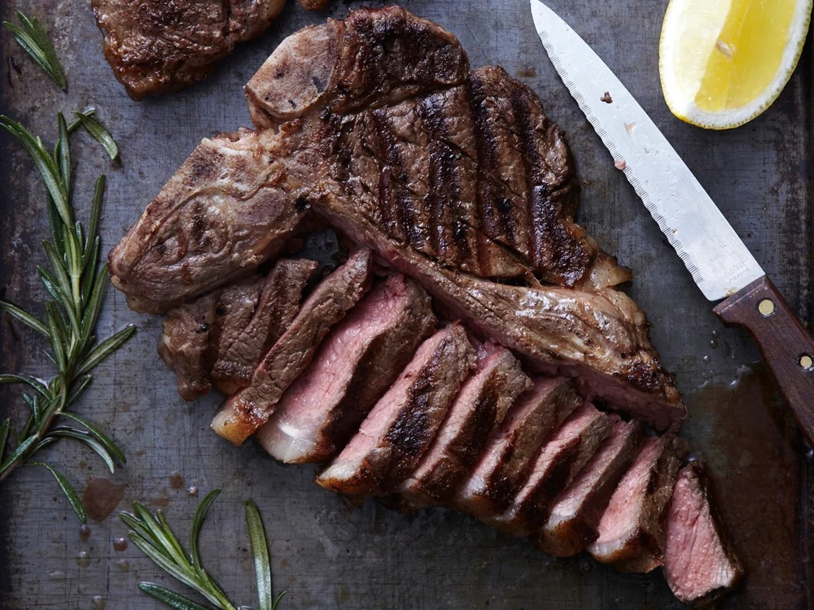

Bistecca alla Fiorentina (Florentine-Style Steak)
Bistecca fiorentina is a traditional Florentine steak recipe that calls for only five ingredients. The steak is typically from Chianina cattle, seasoned with local spices and grilled over red-hot coals. It's traditionally served "rare."
Ingredients
- 1 T-Bone or porterhouse steak, at least 3 inches thick and 3 pounds
- 1 bunch fresh rosemary
- 1 bunch fresh sage
- 2 tablespoons extra virgin olive oil
- Kosher salt and freshly ground black pepper, to taste
Recipe Instructions
- Preheat a grill pan on medium-high heat. Pat the steak dry, and season both sides generously with salt and pepper.
- Tie the rosemary and sage bunches together with butcher’s twine to form an herb brush. Use the herbs to brush the steak with olive oil.
- Place the steak on the grill pan, and char it well: cook about 12 minutes on the first side, flip, and cook about 9 minutes on the second side. Like we said earlier, this steak is traditionally served rare.
- When the steak is done, remove it from the grill pan and allow it to stand for 5 minutes so that the juices are retained when the meat is cut. Carve off the fillet and strip steaks, and slice before serving. Serve hot, and enjoy!
Credit https://www.eataly.com/us_en/magazine/eataly-recipes/bistecca-fiorentina-steak/
Return to top
Return to main page